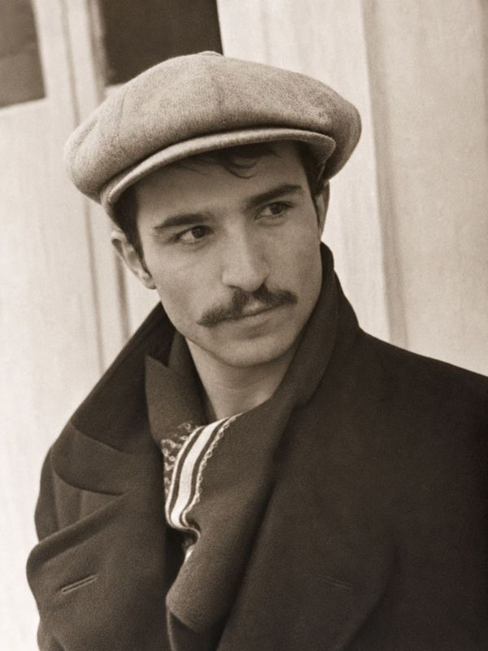

მთა დაუძლურდა, ვით ლადო ― სენთან... კაცს ცოტას ნახავთ იმედით ფხიზელს. რამდენი ფიქრი, რამდენი სევდა ნელა გადადის ენგურის ხიდზე. თუა რაღაცა ამ მთების იქით,― უამრავს ვკარგავ და ცოტას ვიძენ. რამდენი ფიქრი, რამდენი ფიქრი, რამდენი ფიქრი გადადის ხიდზე. წვიმს და ძლივს მოაქვს დედაბერს ტვირთი, გამოიარა რამდენი შუკა. ქარზე მილეწილ ნაბიჯებს ითვლის სამშობლო წინ და სამშობლო უკან. არ არის დარი არც აქ, არც იქით, გვწუწავს და გვწუწავს მიზეზ და მიზეზ... რამდენი სევდა, რამდენი ფიქრი ნელა გადადის ენგურის ხიდზე.ბმული ამ ლექსზე
ციფრული არქივი
მურმან
ძველაია
1935 — 2012
„რამდენი ფიქრი, რამდენი სევდა
ნელა გადადის ენგურის ხიდზე.“

ბიოგრაფია
მურმან ძველაია 1935 წლის 20 სექტემბერს აბაშაში დაიბადა. გორის პედაგოგიური ინსტიტუტის დამთავრების შემდეგ საცხოვრებლად აფხაზეთში გადავიდა და გალის რაიონის ერთ-ერთ სკოლაში მასწავლებლად მუშაობდა. ჯერ კიდევ ომამდე მისი რამდენიმე პოეტური კრებული გამოიცა.
აფხაზეთი პოეტს არც ომის შემდეგ დაუტოვებია — იგი სიცოცხლის ბოლომდე სოფელ პირველ გალში დარჩა და ნარინჯოვანის საშუალო სკოლაში მუშაობა გააგრძელა. 2007 წელს მისი რჩეული, „გვირილების მინდორი“ გამოიცა. პოეტი 2012 წელს, 77 წლის ასაკში გარდაიცვალა. დაკრძალულია სოფელ პირველ გალში.
აფხაზეთი პოეტს არც ომის შემდეგ დაუტოვებია — იგი სიცოცხლის ბოლომდე სოფელ პირველ გალში დარჩა და ნარინჯოვანის საშუალო სკოლაში მუშაობა გააგრძელა. 2007 წელს მისი რჩეული, „გვირილების მინდორი“ გამოიცა. პოეტი 2012 წელს, 77 წლის ასაკში გარდაიცვალა. დაკრძალულია სოფელ პირველ გალში.
- დაბადება
- 1935 წლის 20 სექტემბერი, აბაშა
- ცხოვრება და მოღვაწეობა
- აფხაზეთი, სოფელი პირველი გალი
- კრებულები
- 10 წიგნი, 1978—2007
- გარდაცვალება
- 2012, სოფელი პირველი გალი
ლექსები
ერთ კარგ პოეტთან, უფრო ზუსტად - ჯავახაძესთან არ ირჩეოდა არც მთაწმინდა, ჯავა, მაცესტა... მე და ინჯია მის ოთახში ჩუმად ვისხედით, ჩვენი გორული „მერნის“ ქებას რიდით ვისმენდით. „ჩვენ შორის დარჩეს, მინდა თქვენი ვადიდო სტარტი“ და გითხრა, ჯემალ, რომ „რითმების ხარ დიდოსტატი“. მას შემდეგ ბევრი ლერწმის ყელი გამოითალა, ვისთვის იავდრა და ვისთვისაც გამოიდარა, კიდევ სხვათათვის - არაფერი გამოვიდა რა... შენი კი, ჯემალ, - კვლავაც მინდა ვადიდო სტარტი - რომ საქართველოს სიყვარულშიც ხარ დიდოსტატი.ბმული ამ ლექსზე
კოლხურ კოშკში სტუმრებია, რომ წვა აღარ შენელდეს, მობრძანება სურვებია დავით აღმაშენებელს. არ ღალატობს ასაკი ჯერ ხანჯლით პირგაბასრულით, ჩამოსულა არსაკიძე და კვეტარის ასული. ბრძენის მარჯვენს აფასებენ და ღიაა კარები, მოგროვილან აფხაზები, მეგრელები, სვანები. სულის სითბო მზის ტოლია, გულის მზესთან გასწორდა. საქართველოს ისტორია ჩამუხლულა საწოლთან. შავი ფიქრით მოღობილი ― თრთიან ბედისწერანი და მამალი ხოხობივით სიკვდილს ებრძვის მწერალი. „ფეხზე წამომაყენეთო“ ― დიდოსტატის ჩურჩულმა გაიარა ყველას გულში სიკვდილივით უჩუმრად. კონსტანტინეს ასე ნებავს, ღმერთო ღმერთკაცს მოხედე. და კოლხურ კოშკს გარს ევლება „ვაი, ნანა“ კოლხეთის. წინაპრები ემზეურა... სუსტი, ღონემიხდილი ამბობს: მხოლოდ ზეზეურად, ზეზეურად სიკვდილი!... დროშასავით აიტაცეს, ფეხზე წამოაყენეს. ცრემლი სწვავდათ დიდოელებს, ფხოველებს და კახელებს. და გათავდა დიდოსტატი ― მყინვარწვერის ჭაღარა, ერთიანმა საქართველომ თავი მის წინ დახარა ცა გვრინავდა მეწამული, სუნი იდგა ორღობის და დაეცა წიწამურის ველს მამალი ხოხობი...ბმული ამ ლექსზე
გადამრევს ეს ქარი კოლხური, მეწყერი გადმოქუხს ცით. ცის თეთრი კარები მოხურეს, გათენდა და შავად ცრის. ორად გაყოფილი ენგური, მოიმტვრევს სიბრაზით მხრებს. იტაცებს ნიავი მეგრული ქართულ და აფხაზურ ხმებს. ერთმანეთს ებრძვიან ტალღები, რომ აყვნენ მესამის ხმას. წყურვილი ტუჩებზე მახმება, რით ვსუნთქავ ან ვისთვის ვხნავ. ფესვივით მოთხარეს ეგ გული, მზე მძიმედ ჩადის და წვიმს. ორად გაყოფილი ენგური რა მდორედ მიიწევს წინ.ბმული ამ ლექსზე
ვეღარ გამიხსნის ზოგჯერ დანა პირს, ერთს გადავხედავ მტებს, შენისლულებს. ისე მოვკვდები, ალბათ, დანაპირს ვერა და ვერა ვერ შეგისრულებ. ვარ გაპარული მუზის კალოდან და ამოვხაპე სევდა მცირედიც. ბედი არასდროს აღარ მწყალობდა და ახლა რისი მქონდეს იმედი?! სისხლის ყვირილი იქნებ მეწყება, რამ დამაძინოს მშვიდად ამაღამ და ტიციანის ლექსის მეწყერმა გამიტანა და ცოცხლად დამმარხა. რიდი მაქვს შენი მთის და კორდების, ვეღარ გამიხსნის ზოგჯერ დანა პირს, მამულო ჩემო, ისე მოვკვდები, ვერ შეგისრულებ, ალბათ, დანაპირს.ბმული ამ ლექსზე
ღელავს არაგვის მთვარე ბარჩხალა‒ მიწის და ზეცის ნაზი კავშირი. მთვარის სხივებით ლექსს წერს ბაჩანა, ქომაგობს თედო რაზიკაშვილი. ვაჟაც აქ არი, მთებს გულს ატოლებს, უმწეო ყვავილს უწევს ანგარიშს. თუ რა შვილების იყო პატრონი, ნეტა თუ გრძნობდა ამას ჩარგალი? ო, ჩარგლის მთებო, თქვენი მონა ვარ, მღვრიე არაგვმაც წარბი აშვილდა. თქვენს მძიმე წარსულს, ნათელ მომავალს უმღერდა ჩანგი რაზიკაშვილთა.ბმული ამ ლექსზე
სულის ზიარო, ვისთან მზიანობ, ასე უღმერთოდ რატომ დუმხარო. სად დაიკარგე, შე მადლიანო, შე არაგვივით ლექსო მქუხარო. რაც არის კარგი ― მესამოთხება და ვუერთდები ვით მტკვარს ლიახვი. დღეს ვკითხულობდი მე სამ მოთხრობას და ბევრს ვეძებდი მათში სიახლეს. ერთი სული მაქვს როდის მეწვევით, დრო ელოდება ახალ ტიტანებს. მოდით, მოვარდით, როგორც მეწყერი, ცოცხლად დამმარხეთ და გამიტანეთ.ბმული ამ ლექსზე
რისიც მეშინოდა‒ის გაბრწყინდა, რა მოხდა, რა დავუმშვენე... ღმერთო, უშველე საქართველოს, ღმერთო, საქართველოს უშველე; მომკლა ამდენმა გათიშვებმა, რა აზრს ანთხევენ ― უშვერებს. ღმერთო, უშველე საქართველოს, ღმერთო, საქართველოს უშველე. არიდე სიტყვებს დენთიანებს,― მიწებს რა ხარბად იყოფენ...ბმული ამ ლექსზე
ჯერ სიკვდილი აღარ მინდა, ის დღე როგორ არ ვიხილო. გადმომყურებს მაღალი მთა, მოიტაცა მარიხი რომ. ბარისა თუ მთის შვილებით არ ჩამცხრალან ის ჟინები, გამთლიანდი საქართველოვ! მოვრბოდი და ვყიჟინებდი. ამას თუ ვერ მოვესწარი, ერთს გთხოვ, ჩემო შვილიშვილო: მივიწყების ტანსაბურავს მომახურავს ფინიში რომ. მოირბინე ჩემს საფლავთან, ფრთა შეგასხას განთიადმა, და ჩამძახე: ჩემო ბაბუ, საქართველო გამთლიანდა!...ბმული ამ ლექსზე
ფოტოგალერეა
6 ფოტო
გამოცემული კრებულები
1978 — 2007
1978
მონატრება
გამომცემლობა „ალაშარა“, სოხუმი. „მონატრება“ პოეტის პირველი წიგნია. „მამულისადმი თავდადება, ჩვენი წარსული და აწმყო, ფიქრი მომავალზე, ომის დღეების გამოძახილი, სიყვარული და მეგობრობა - აი, რა ასულდგმულებს ახალგაზრდა პოეტის ლექსებს.“
1982
მწიფე ველები
გამომცემლობა „ალაშარა“, სოხუმი. „წინამდებარე კრებული მურმან ძველაიას მეორე წიგნია. სიყვარულით წერს იგი სამშობლოზე, მშობლიურ მიწა-წყალზე, მისთვის ძვირფას ადამიანებზე. პოეტის ლექსებისთვის ნიშანდობლივია გულწრფელობა“.
1985
ზღვა და გული
გამომცემლობა „ალაშარა“, სოხუმი. „ზღვა და გული“ მურმან ძველაიას მესამე კრებულია. „პოეტი წერს სიყვარულზე და მეგობრობაზე, დღევანდელობა და ისტორიულ წარსულზე, გულწრფელად ახარებს ადრე მიტოვებული სოფლის აღორძინება, ადიდებს მშრომელი კაცის მარჯვენას“.
1991
სიმღერის სიმწვანე
გამომცემლობა „ალაშარა“, სოხუმი. „მურმან ძველაიას წიგნში შეტანილია ბოლო წლებში დაწერილი გამოუქვეყნებელი ლექსები“.
2000
მძიმე ვალსი
გამომცემლობა „განათლება“, თბილისი. პოეტისთვის ეს წიგნი რიგით მეხუთეა. „ყურადღებას იქცევს ვერსიფიკაციული ძიებით, თავისებური პოეტური ხედვითა თუ მეტაფორული აზროვნებით“.
2002
იმედების გვირგვინი
ავტორის რიგით მეექვსე წიგნი. „ბოლო დროის შემოქმედებას ცრემლის მდუღარებასავით შეერია აფხაზეთის ტრაგედიის სატკივარი. ნათელ, კაშკაშა ფერებს „მსუყე შავი“ სევდასავით შეენივთა და თითქოს კიდევ უფრო გულმისავალი გახდა მათი პოეტური იმპულსები“.
2003
აბაშა და აბაშელები
გამომცემლობა „ეგრისი“, თბილისი. კრებული რიგით მეშვიდე წიგნია. „გულწრფელი მოფერება, სიყვარულის ხმამაღლა გაცხადება ამ მხარეში მცხოვრებლებისადმი. აქ საბჭოური პერიოდის ლექსებიცაა შეტანილი. ძველი და ახალი ყოფა-ცხოვრება - ორივე - პოეტის გულისგულშია გავლილი და ეს ასახულია კიდეც ამ კრებულში“.
2004
წარსული აწმყოში
გამომცემლობა „ეგრისი“, თბილისი. პოეტისთვის ეს წიგნი რიგით მერვეა. „მას გულისგულში სტკივა თავისი ქვეყნის ტკივილი და სჯერა, რომ ამ ტკივილის მოსაშუშებლად ერთად დგომა და ეროვნული სულიერებისა და ცნობიერების გაჯანსაღებაა საჭირო“.
2005
შერეკილი სტრიქონები
გამომცემლობა „ეგრისი“, თბილისი. „ეს მურმან ძველაიასთვის ერთგვარად საიუბილეო კრებულია“.
2007
გვირილების მინდორი (რჩეულივით)
გამომცემლობა „ეგრისი“. „ავტორი ამ წიგნს ტრაგიკულად დაღუპული მოსწავლის, სოსო სანაძის ხსოვნას უძღვნის“.